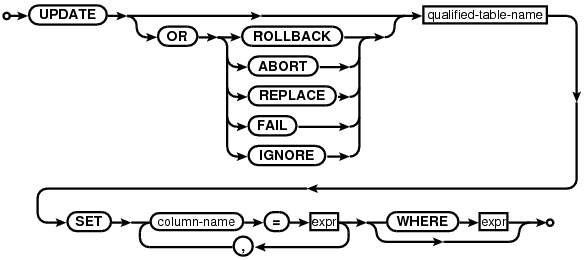
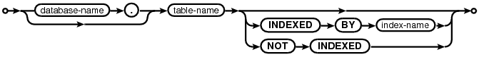
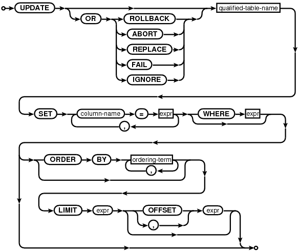

Choose any three.
|
|
SQL As Understood By SQLite
UPDATE
update-stmt:

qualified-table-name:

An UPDATE statement is used to modify a subset of the values stored in zero or more rows of the database table identified by the qualified-table-name specified as part of the UPDATE statement.
If the UPDATE statement does not have a WHERE clause, all rows in the table are modified by the UPDATE. Otherwise, the UPDATE affects only those rows for which the result of evaluating the WHERE clause expression as a boolean expression is true. It is not an error if the WHERE clause does not evaluate to true for any row in the table - this just means that the UPDATE statement affects zero rows.
The modifications made to each row affected by an UPDATE statement are determined by the list of assignments following the SET keyword. Each assignment specifies a column name to the left of the equals sign and a scalar expression to the right. For each affected row, the named columns are set to the values found by evaluating the corresponding scalar expressions. If a single column-name appears more than once in the list of assignment expressions, all but the rightmost occurrence is ignored. Columns that do not appear in the list of assignments are left unmodified. The scalar expressions may refer to columns of the row being updated. In this case all scalar expressions are evaluated before any assignments are made.
The optional conflict-clause allows the user to nominate a specific constraint conflict resolution algorithm to use during this one UPDATE command. Refer to the section entitled ON CONFLICT for additional information.
Restrictions on UPDATE Statements Within CREATE TRIGGER
The following additional syntax restrictions apply to UPDATE statements that occur within the body of a CREATE TRIGGER statement.
The table-name specified as part of an UPDATE statement within a trigger body must be unqualified. In other words, the database-name. prefix on the table name of the UPDATE is not allowed within triggers. Unless the table to which the trigger is attached is in the TEMP database, the table being updated by the trigger program must reside in the same database as it. If the table to which the trigger is attached is in the TEMP database, then the unqualified name of the table being updated is resolved in the same way as it is for a top-level statement (by searching first the TEMP database, then the main database, then any other databases in the order they were attached).
The INDEXED BY and NOT INDEXED clauses are not allowed on UPDATE statements within triggers.
The LIMIT and ORDER BY clauses for UPDATE are unsupported within triggers, regardless of the compilation options used to build SQLite.
Optional LIMIT and ORDER BY Clauses
If SQLite is built with the SQLITE_ENABLE_UPDATE_DELETE_LIMIT compile-time option then the syntax of the UPDATE statement is extended with optional ORDER BY and LIMIT clauses as follows:
update-stmt-limited:

If an UPDATE statement has a LIMIT clause, the maximum number of rows that will be updated is found by evaluating the accompanying expression and casting it to an integer value. A negative value is interpreted as "no limit".
If the LIMIT expression evaluates to non-negative value N and the UPDATE statement has an ORDER BY clause, then all rows that would be updated in the absence of the LIMIT clause are sorted according to the ORDER BY and the first N updated. If the UPDATE statement also has an OFFSET clause, then it is similarly evaluated and cast to an integer value. If the OFFSET expression evaluates to a non-negative value M, then the first M rows are skipped and the following N rows updated instead.
If the UPDATE statement has no ORDER BY clause, then all rows that would be updated in the absence of the LIMIT clause are assembled in an arbitrary order before applying the LIMIT and OFFSET clauses to determine which are actually updated.
The ORDER BY clause on an UPDATE statement is used only to determine which rows fall within the LIMIT. The order in which rows are modified is arbitrary and is not influenced by the ORDER BY clause.